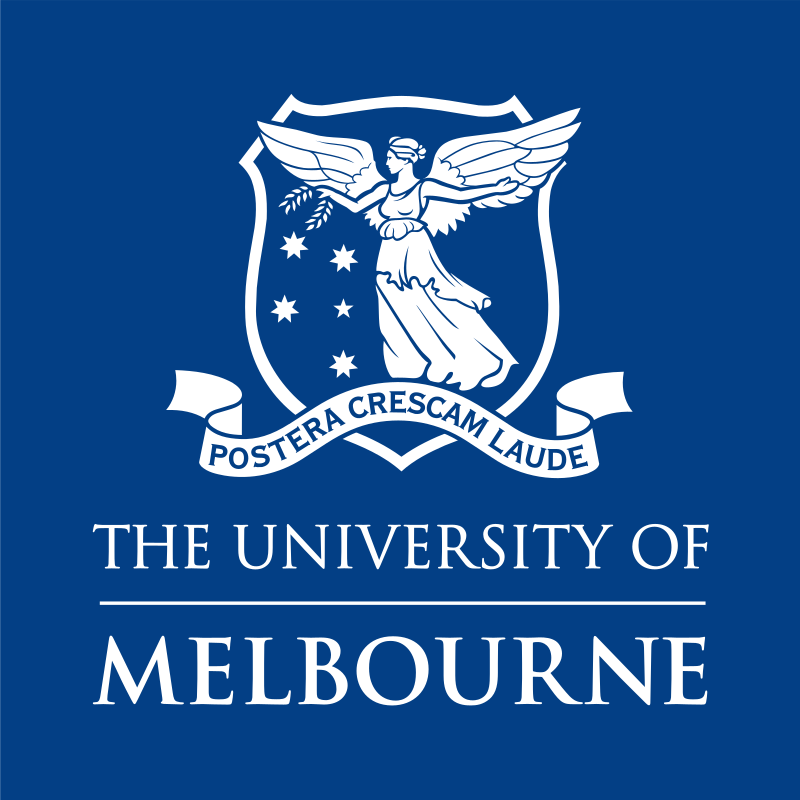

Lorenzo Campoli
Independent Researcher
delphic.node@proton.me
About Me
I am a Research Fellow at The University of Melbourne, where my work focuses on data-driven turbulence modeling. I am currently exploring the use of unsupervised machine learning algorithms and Gene Expression Programming (GEP) to enhance the generalizability and explainability of Reynolds-Averaged Navier-Stokes (RANS) turbulence closure models. My research interests include hypersonic reactive viscous non-equilibrium flows, numerical methods for high-speed flows, shock-fitting, turbulence closure modeling, machine learning, and high-performance computing. I am also a contributor to the UnDiFi-2D project, an open-source code for unstructured discontinuity fitting.
Previously, I was an Assistant Professor at the Fluid Mechanics Department at Saint Petersburg State University, where I developed and implemented numerical methods for high-speed non-equilibrium viscous reactive flows. During my time there, I also taught several courses on machine learning and hypersonics.
News
- [2022-03-13] Our paper "Assessment of Machine Learning Methods for State-to-State Approach in Nonequilibrium Flow Simulations" has been published in Mathematics.
- [2021-05-28] Our paper "UnDiFi-2D: an Unstructured Discontinuity Fitting code for 2D grids" has been published in Computer Physics Communications.
Affiliations
